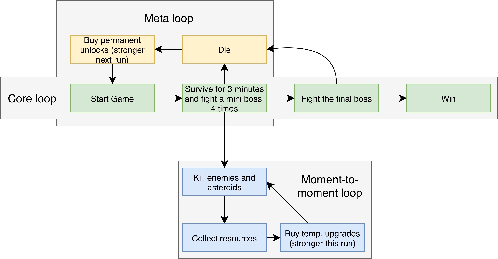

Thrust Factor
Thrust Factor is a tight, difficult, movement based space shooter roguelite, loosely based on the classic game Asteroids. The player avoids lasers, missiles and space rocks while battling bosses and gathering upgrade modules to improve their ship.
Design Goal
I wanted to modernize the retro game Asteroids. Apart from sound and graphics, I set out to improve four aspects:- Modernized controls
- Faster-paced and more active gameplay
- Better enemy AI
- More long-term goals

Controls
After multiple iterations, it turned out that using the mouse to both aim and rotate worked really well. It means you fire in the direction you're flying: the player will be pointed towards the danger.This control scheme has a steep learning curve, but allows for very precise movement, lending to a high skill ceiling.
Game loop
Show game loop sketchLess is more
Instead of health being a continuous scale, and damage being some arbitrary value, I opted for a tighter system with lower numbers: you have 3 health points, and the player deals 1 damage every time.This system rewards precision, punishes carelessness, and is much easier to communicate!
Forcing Movement
There was a problem: just like in classic Asteroids, players initially remained stationary, turning the game into a turret sim. Instead of bloating the game with new, unneccessary mechanics, I decided to work with the tools I had, and design enemy AI that force the player employ a more active playstyle.Through playtesting I found that players got bored after a few runs: there was too little long-term progression. That's why I designed a meta loop: to sustain engagement, the player can buy permanent upgrades.
